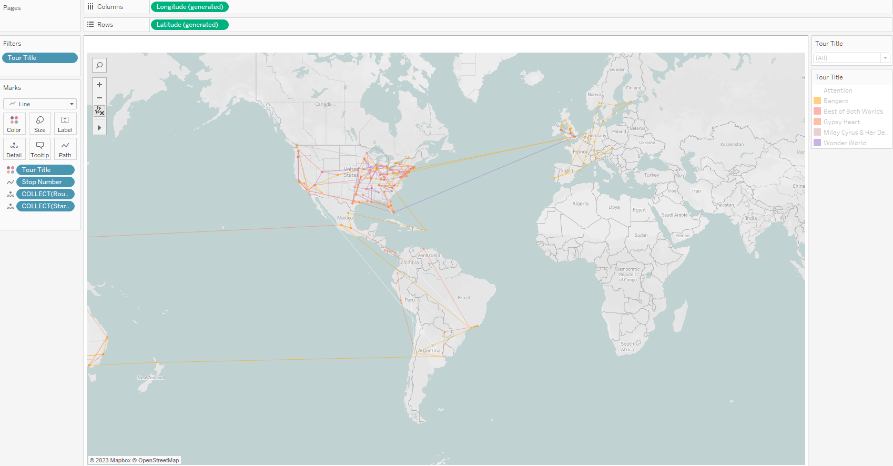
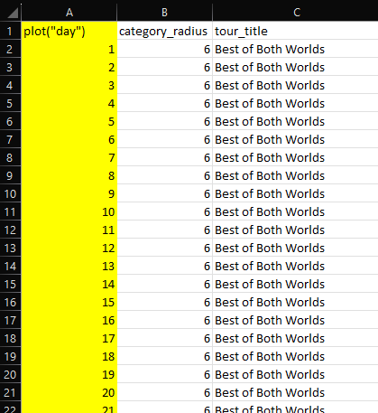
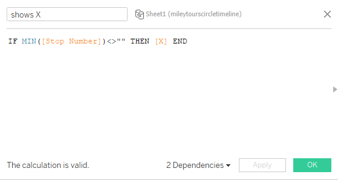

Visualizing Miley Cyrus's Tour History
Tools Used:Tableau, Excel
Miley Cyrus is an amazing performer. Her voice, which is wildly underappreciated as an instrument, can body any genre.
Miley has not "properly" toured since Bangerz in 2014. In March 2023, she released her new album: Endless Summer Vacation. Following the new album release, fans were excited for a possible end in Miley's tour haitus. However, on May 24th 2023, Miley posted this, confirming no possibility for a tour in the near future:
A message from Miley ❤️ pic.twitter.com/zEIyxn8342
— Miley Cyrus (@MileyCyrus) May 24, 2023
Following this sad news, I became curious about Miley's tour history. Though she has a rich collection of amazing live performances, her actual tour history, especially in the recent past, has been limited in quantity. I doubted that there were any formal datasets containing information that I wanted about her tour history publically available, so I compiled my own. However, before I started compiling data, I needed to identify specifically what data I wanted. I started by drawing what I wanted to visualize, and how I wanted these visuals to look. I wanted this project to challenge my Tableau skills and focus more on unconvential visualizations-- ones that did not come default with Tableau.
I wanted a network analysis of her tours and set lists (which songs were performed at which tours?), a nonlinear timeline(s) of her tour shows, and a map showing the paths of her shows for each tour.
Key Question 1: Where has Miley Cyrus toured?
Key Question 2: When has Miley Cyrus toured? Key Question 3: How were set lists from different Miley Cyrus tours related?Now I knew what kind of data I needed to compile. I looked for Miley's different tour titles, the dates and locations of shows that she performed on each tour, and the set lists of each tour. For additional information in the Tableau tooltips, I collected available data on opening/supporting artists. I ended up with three Excel sheets: one sheet with all of her different tours, their start and end dates, and attendance and revenue (if available), one sheet with the set list of each tour, including the number of times each song has appeared across the set lists of all Miley's tours, and one sheet with every performance of each tour, including date, location, and supporting act (if available).
I anticipated potentially having to employ SQL for this project, but because these datasets are relatively small, and because I compiled exactly the data that I wanted, SQL did not end up being required for this project. I opened Tableau Public and got started on the first visualization: the map. As mentioned, I wanted a map that showed the paths of each tour. I thought that this would be the easiest visualization-- surely there have been plenty of people to visualize paths on maps on Tableau before. To my surprise, there hasn't. I could simply just show where Miley has toured with points on the map, but I wanted to show the paths of her tours. There are plenty of resources to show how to visualize singular starts and destinations, but it was fairly difficult to finally find a resource to show how to visualize a path with multiple stops. I eventually found this YouTube video on drawing travel plans for business trips. I added a stop_number column to my tour_shows sheet so that I could throw this into the Path shelf in Tableau. I also converted my city column to geographic data in Excel in order to quickly get the latitude and longitude coordinates for each city.

Now I can create custom calculated fields for the latitude and longitude coordinates of each location.
Using these newly created points, I can use the MAKELINE function to create anoter custom calculated field to draw a path between the start and stop points, called Route.
Now, I can load a map with Tableau, and throw in the Route field. Tableau needs to know what order to draw the paths in, so I drag the stop_number column into the Path shelf. Lastly I need to distinguish between the different tours, so I drag the tour_title column into the Color shelf. Finally, I have the result I was looking for.
Still working in my tour_shows data, next, I wanted to look at when Miley has toured by creating a timeline. However, I wanted to create a nonlinear timeline. I was deciding between a curvy timeline or a circular timeline. I ultimately decided to go with the circular timeline because there there is a large difference in quantity of shows between her Bangerz Tour and her Attention Tour. I wanted a different line/path for each tour, and I thought this would fair better appearance-wise on circular timelines. The next problem to address was that I had no idea how to do this. Finding resources for this was even more difficult than finding one for the map paths. Searching "circle timeline" yields many results of linear timelines with circles to represent individual events.
Fortunately, I eventually found this article by Klaus Schulte that walked through exactly what I was trying to achieve. Going by Schulte's article, I had to create a new column for each year spanning the period I wanted to visualize. However, unlike Schulte's multicentry period, I was working with only a matter of a few years, and there were many events that happened in each year that I wanted to individually be visualized. So instead, I created a new column to show the days each tour spanned. There were many changes I had to make to make to my existing tour_shows, so in the end all of my changes became its own sheet.
Then I created custom calculated fields with Schulte's formulas to create angles for the circle, and to plot the points on a circular path.
I chose 270 beacuse I wanted my circle to open in the fourth quadrant.
This custom calculated field becomes a dependent for our X and Y, which have our points plot on a circular path.
After trying to throw these into Tableau, I run into my first issue. My circles don't all end at the same place. I eventually realize that this is because each tour's duration lasts a different number of days, and only the longest tour (Bangerz lasting 252 days) reaches 270 degrees. After realizing this, I update my spreadsheet so that each tour has 252 rows. Now, after throwing my custom calculated fields X and Y into the Rows and Columns shelves, and the plot("day") column into the Detail and Path shelf, all of my circles end in the same place. For some reason, some of the first shows of the tours don't show in the visual until I drag the tour_title column into the Color shelf.

Since I changed all of the tours to a duration of 252 days, I had to alter each tour's (besides Bangerz) show spacing to as if it did last 252 days. I wanted the last event on each timeline to end in the same place. I was able to do this by first finding the original spacing between the shows, by making a new column in tour_shows and taking the date of one show and subtracting the date of the previous show, then adding the value above it in the column. The first show of each tour has a value of 1 in this column.
So now I can see that the first show of the Best of Both Worlds Tour took place on day 1, the second show on day 3, the third show on day 4, and so on. However, since I am manipulating the data so that each tour lasts 252 days, I need to also adjust the time_spacing column so that the numbers reflect that. So, how can I change the durationg of each tour to 252 days? Using the Best of Both Worlds Tour, which took place over 144 days, as an example: What would I need to multiply 144 by to become 252? The quotient of 252 and 144. In other words, 71x=252 gives us x=252/144. So I can take this mutliplier and multiply it to the difference of the dates in my formula for the column. I only multiply the difference because the spacing needs to stay proportional. This new formula allows the last show of the tour to end at 252 days.
Due to rounding, I have to adjust my multiplier a little bit so that the last event indeed ends on "day" 252.
Then I can do the same thing for the rest of the tours, using multipliers 252/a, where a is the real duration in days of the respsective tour. Now that we have this data for each show in each tour, I can go back to my newest sheet and put each show in their respective row among the 252 rows for each tour.
Now I can create another custom calculated field for the events on the timeline called shows X. I'll have it plot a point on the timeline if the stop_number is not blank. I need to use some aggregate function in order for the IF function to work. MIN works but so would MAX, AVG, etc. I also could have used date, time_spacing, city, or country since all of those columns would also have been occupied if there was a show occurring.
Now, I can finally use this new shows X to create a dual, syncrhonized axis with the first X and have it plot the shows on the timelines as circles. I also add everything that I want in the tooltip into the Tooltip shelf. Then I finally have a timeline that proportionally shows the timing of the shows of each of Miley's tours.

Finally, it's time to address key question #3. To do this, I wanted to do a network analysis on Miley's set lists of each tour. Fortunately, Tristan Guillevin has a network analysis tool and tutorial. I utilized this to create a JSON file from my set_list sheet to load into Guillevin's tool to create a network visualization that I could load into Tableau. I used Tableau to help me set each song to be a song node and each tour to be a tour node, and specified the links between them in the JSON file. I also had the size of the song nodes be dependent on the number of tours that song has appeared in, and the size of the tour nodes be dependent on how many shows that tour had. After obtaining the network from Guillevin's tool and loading it into Tableau, I get something that looks like this:
Then it is "just" a matter of compiling the dashboard together. This is the final result:

Thank you for reading until the end. Here are the associated links for this project: